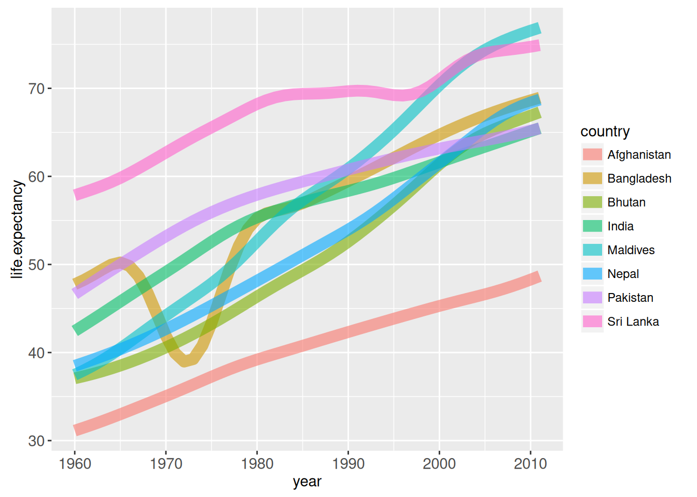
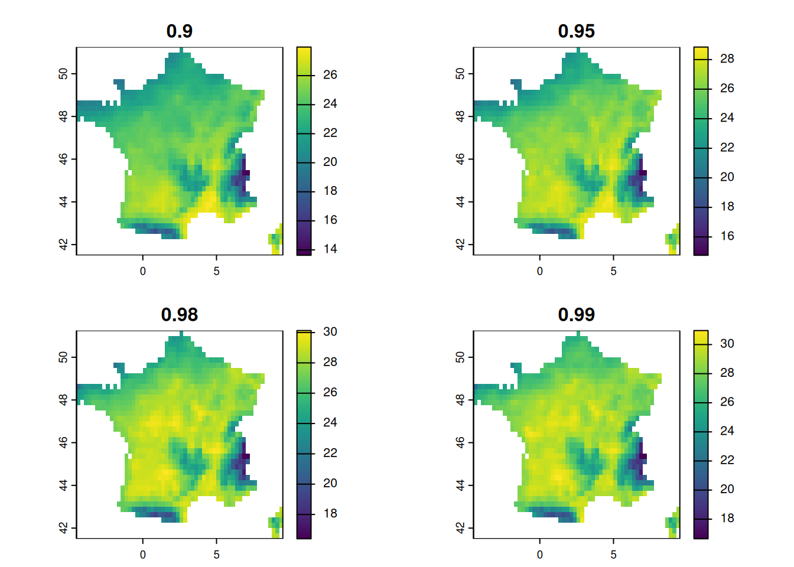
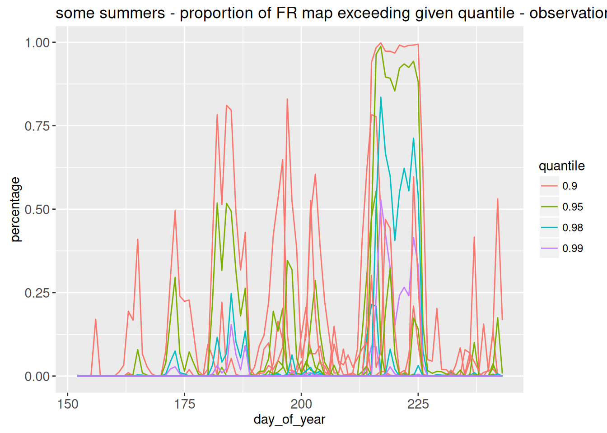
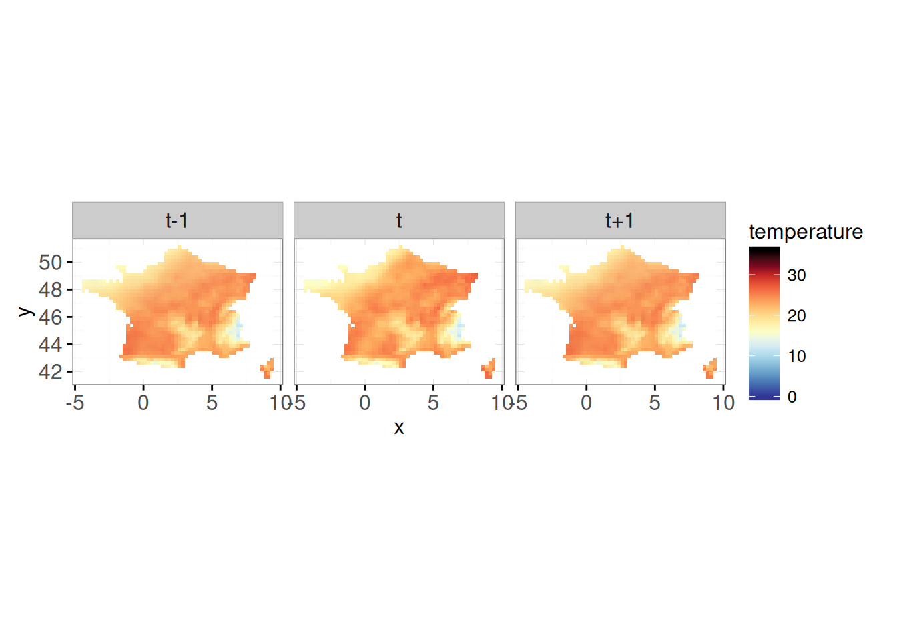

suppressPackageStartupMessages(library(animint2))
suppressPackageStartupMessages(library(data.table))
suppressPackageStartupMessages(library(dplyr))
suppressPackageStartupMessages(library(plyr))
suppressPackageStartupMessages(library(maps))Animint 2
We follow a simplified version of the tutorial given here: https://rcdata.nau.edu/genomic-ml/animint2-manual/Ch08-WorldBank-facets.html
Loading useful libraries
EXAMPLE 1: World Bank data
Data loading and formatting
data(WorldBank)
WorldBank$Region <- sub(" (all income levels)", "", WorldBank$region, fixed=TRUE)
# Remove NAs
df <- data.table(WorldBank)[!(is.na(life.expectancy) | is.na(fertility.rate))]
# Display only the region south asia for ease of vizualization
df <- df[df$region == "South Asia"]
years <- unique(df[, .(year)])The helper functions FACETS etc will be used to generate adequate facet grids.
add_facets <- function(df, top, side){
data.frame(df,
top=factor(top, c("Fertility rate", "Years")),
side=factor(side, c("Years", "Life expectancy")))
}
facet_right <- function(df) add_facets(df, "Years", "Life expectancy")
facet_left <- function(df) add_facets(df, "Fertility rate", "Life expectancy")First animint plot: show life expectancy for each country over time
life_expect_plot <- ggplot()+
geom_line(aes(year, life.expectancy,
group = country, colour = country),
clickSelects = "country", data = facet_right(df),
size = 4, alpha = 3/5)
life_expect_plot
With animint, the plot is shown in the “Viewer” panel and one can select which countries should be left in the plot.
animint(life_expect_plot)
Adding a bar to highlights a year
The important parameter here is ‘clickSelects’.
# facet_right(years) contains the unique years of the df and 2 columns for facet used later in the tutorial
plot_with_bar <- life_expect_plot +
geom_tallrect(aes(xmin = year-1/2, xmax = year+1/2),
clickSelects="year", data = facet_right(years),
alpha=1/2, show.legend = T)
animint(plot_with_bar)Modify the vertical cursor text display to show the average life expectancy
By default, the text displayed at the current state of the bar is the current value of the bar. Use the ‘toolkit’ argument in aes() to change what is displayed.
years_df <- df %>% group_by(year) %>% dplyr::summarise(mean_life_expectancy = mean(life.expectancy))
plot_with_bar <- life_expect_plot +
geom_tallrect(aes(xmin=year-1/2, xmax=year+1/2,
tooltip = paste0("Mean life expectancy: ",
round(mean_life_expectancy, 1))),
clickSelects="year",
data = facet_right(years_df), alpha=1/2)
animint(plot_with_bar) Add points to get exact value of life expectancy for each country
Like the bar above, we use the ‘tooltip’ argument
full_plot <- plot_with_bar +
geom_point(aes(year, life.expectancy, color = country,
tooltip = paste0(country, " - Life expectancy :",
round(life.expectancy, 1))),
showSelected = "country",
clickSelects = "country",
size = 2,
data = facet_right(df))
animint(full_plot) Let us add a second facet
In this part, this is where the functions facet_right and facet_left are useful. These functions creates columns to order the axis. Like ggplot, the variable used for facet must be a factor.
# First add the facet grid
plot_right <- full_plot + theme_bw() +
theme(panel.margin=grid::unit(0, "lines")) +
facet_grid(side ~ top, scales="free") + xlab("") + ylab("") +
theme_animint(width=600)When adding the second plot, we use the ‘showSelected’ argument, the variable must correspond to the one used in the first plot with the argument ‘clickSelected’
# Add the 2nd plot
plot_both <- plot_right +
geom_point(aes(fertility.rate, life.expectancy,
colour=country, size=population, key=country),
clickSelects="country",
showSelected = "year",
data = facet_left(df)) +
scale_size_animint(pixel.range=c(2, 20), breaks=10^(9:5))animint(plot_both)EXAMPLE 2: US tornadoes visualization
Example taken from https://suhaani-agarwal.github.io/tornado-visualization/ ## Loading and formatting data
data(UStornadoes)
UStornadoes <- UStornadoes[order(UStornadoes$year),] # sort the df by year so that they appear in the right order
UStornadoes$region <- tolower(state.name[match(UStornadoes$state, state.abb)])Generating a US map
We first generate an animint map of the US on which each state can be selected
USpolygons <- map_data("state") # Animint function to create a map, "state" is for US states
map = ggplot() +
theme_animint(width=750, height=500) +
geom_polygon(aes(x=long, y=lat, group=group, tooltip = region),
clickSelects="region",
data=USpolygons,
fill="#000000",
colour="white",
size=0.5,
alpha=1)
animint(map)Adding the tornadoes segments
Let us add to the maps segments that give the tornadoes trajectory (segment from start point to end point). We also use the parameter ‘showSelected’ so the the map displays the tornado only for a specific year.
seg.color <- "#55B1F7"
tornadoes_map <- map +
geom_segment(aes(x=startLong, y=startLat,
xend=endLong, yend=endLat),
colour=seg.color, size = 1.2,
showSelected="year",
data=UStornadoes)
animint(tornadoes_map)Adding the tornadoes points
Superposing tornadoes end point to tornadoes segments.
pt.color <- "#9999F9"
tornadoes_map <- tornadoes_map +
geom_point(aes(endLong, endLat),
colour=pt.color,
showSelected="year",
data=UStornadoes,
size=1)
animint(tornadoes_map)Creating histograms with the number of tornadoes per (state, year)
UStornadoCounts <- ddply(UStornadoes, .(region, year), summarize, count=length(region))The tornadoes histogram per (state, year). We use the parameter ‘showSelected’ = region so that it can be linked to the map later. Similarly for the argument ‘clickSelects’ = year, it corresponds to ‘showSelected’ in the map.
tornadoes_hist <- ggplot() +
xlab("year") +
ylab("Number of tornadoes") +
geom_bar(aes(year, count),
clickSelects="year",
showSelected="region",
data=UStornadoCounts,
stat="identity",
color = "black",
fill = "#22212100",
alpha = 1,
position="identity")
animint(tornadoes_hist)Adding value on top of the bar when it is clicked.
tornadoes_hist <- tornadoes_hist +
geom_text(aes(year, count + 5, label=count),
showSelected=c("region", "year"),
data=UStornadoCounts, size=20)
animint(tornadoes_hist)Combining the map and histogram
animint(tornadoes_map, tornadoes_hist)EXAMPLE 3 : TEMPERATURE DATA
library(animint2)
library(terra)terra 1.8.70
Attaching package: 'terra'The following object is masked from 'package:data.table':
shiftlibrary(dplyr)
library(tidyr)
Attaching package: 'tidyr'The following object is masked from 'package:terra':
extractGet the data to plot
First, let us get the data and usefull functions
france_temperature=rast("data/EOBS_FR31.nc")
library(lubridate)
Attaching package: 'lubridate'The following objects are masked from 'package:terra':
intersect, unionThe following objects are masked from 'package:data.table':
hour, isoweek, mday, minute, month, quarter, second, wday, week,
yday, yearThe following objects are masked from 'package:base':
date, intersect, setdiff, uniondates = seq.Date(ymd("1985-01-01"),ymd("2015-12-31"),by='day')
dates = dates[
-which((month(dates)==2 & day(dates)==29))]
france_temperature = france_temperature[[1:length(dates)]]
datessummers = dates[(month(dates)%in%6:8) & ( year(dates) %in% c(2003,2015,1990,1999)) ]
summers =subset(france_temperature, month(time(france_temperature)) %in% c(6,7,8))
summers =subset(summers, year(time(summers)) %in% c(2003,2015,1990,1999))
names(summers)=datessummers
## function to get quantile map ----
get_qmap=function(raster,li_q){
n=length(li_q)
s = c()
for(i in 1:n){
q=li_q[i]
s <-c(s,app(raster, fun=function(i){quantile(i,q,na.rm=T)}))
}
s=rast(s)
names(s) = li_q
return(s)
}
## get quantile maps from observation 1985-2015-------
qmaps = (get_qmap(summers,c(0.9,0.95,0.98,0.99)))
plot(qmaps)
The different maps are quantiles of temperature for each pixels.
## function to get percentage of area over quantiles ----
get_area_over_qmaps=function(raster,qmaps){
#returns a time dataframe of % of area over the maps in qmaps
# n+1 columns with n the number of layers in qmaps, named after quantiles.
ngrid = global((not.na(raster)),sum)
depsummer =data.frame(t=time(raster))
for(i in 1:nlyr(qmaps)){
qmap = qmaps[[i]]
summersq = raster>qmap
depsummer[,i+1]= global(summersq,sum,na.rm=T)/ngrid
}
names(depsummer)=c('t',names(qmaps))
return(depsummer)
}
data=get_area_over_qmaps(summers,qmaps)
depsummer=data
longdep=gather(depsummer,quantile,percentage,-t)
longdep$year =year(longdep$t)
longdep$day_of_year=yday(longdep$t)
head(depsummer) t 0.9 0.95 0.98 0.99
1 1990-06-01 0 0 0 0
2 1990-06-02 0 0 0 0
3 1990-06-03 0 0 0 0
4 1990-06-04 0 0 0 0
5 1990-06-05 0 0 0 0
6 1990-06-06 0 0 0 0head(longdep) t quantile percentage year day_of_year
1 1990-06-01 0.9 0 1990 152
2 1990-06-02 0.9 0 1990 153
3 1990-06-03 0.9 0 1990 154
4 1990-06-04 0.9 0 1990 155
5 1990-06-05 0.9 0 1990 156
6 1990-06-06 0.9 0 1990 157longdep contains for each date t, each quantile, each year and day_of_year the percentage of location over their quantile.
Objective number 1 : getting percentage = f(year) with color=quantile , selecting only chosen year and highlighting only chosen quantile.
library(animint2)
gobs <- animint2::ggplot() +
animint2::geom_line(
animint2::aes(x=day_of_year, y= percentage,group = interaction(quantile,year),color=quantile), data = longdep
) +
animint2::labs(title = "some summers - proportion of FR map exceeding given quantile - observations")
gobs
This is not very pretty ! There is too much info at once. We want to only plot a given year, selected using showSelected=c( “year”). And also, why not choosing the quantiles to plot ?
plot_QER <- animint2::ggplot()+
animint2::geom_line(animint2::aes(
day_of_year,percentage,group=quantile,color=quantile),
clickSelects=c("year","quantile"), #use selection to choose the year.
showSelected=c( "year"), #only show the selected year
data=(longdep), size=4, alpha=3/5)+
theme_bw()+
xlab("Day of year")+
ylab("Percentage")
animint(plot_QER)We can add a rectangle, higlighting a selected day (will be useful later)
plot_QER <- animint2::ggplot()+
# highlight the chosen year again
geom_tallrect(animint2::aes(
xmin=day_of_year-1/2, xmax=day_of_year+1/2),
clickSelects="day_of_year",
data=(longdep), alpha=1/2)+
animint2::geom_line(animint2::aes(
day_of_year,percentage,group=quantile,color=quantile),
clickSelects=c("year","quantile"), #use selection to choose the year.
showSelected=c( "year"), #only show the selected year
data=(longdep), size=4, alpha=3/5)+
theme_bw()+
xlab("Day of year")+
ylab("Percentage")
animint(plot_QER)Objective 2 : plot the temperature for chosen day t of a given year
# --- palette and limits ---
pal <- c("black","#67001f",'#d73027','#f46d43','#fdae61','#fee090',
'#ffffbf','#e0f3f8','#abd9e9','#74add1','#4575b4','#313695')
mm <- c(0,36)
# be careful, this is heavy data
summers_small <- terra::aggregate(summers, fact = 1, fun = mean)Warning: [aggregate] all values in argument 'fact' are 1, nothing to do# --- 1. Raster data prepared for ggplot/animint2 ---
# Extract one value per cell per date -> convert to data.frame
# summers is a SpatRaster with layers named as dates
map_df <- as.data.frame(summers_small, xy = TRUE, na.rm = FALSE)
map_df <- tidyr::pivot_longer(map_df, -c(x,y),
names_to = "t",
values_to = "temperature")
map_df$t <- as.Date(map_df$t)
map_df$year <- lubridate::year(map_df$t)
map_df$day_of_year <- lubridate::yday(map_df$t)
# --- 2. Map plot (left) ---
map_plot <- animint2::ggplot() +
animint2::geom_tile(animint2::aes(x, y, fill = temperature),
data = map_df,
showSelected = c("year","day_of_year"),colour=NA) +
animint2::ggtitle("Date t (selected)")+
animint2::scale_fill_gradientn(colors = rev(pal),
na.value = "transparent",
limits = mm) +
animint2::coord_equal() +
animint2::labs(fill = "temperature")+theme_bw()
animint(map_plot)Objective 3 : plot together the map of temperature at a day, highlighting that day on my first plot
Can take a while, because the dataframe for plotting is large. We have used shared variables names, so selecting from (year,day_of_year) has the same meaning in both graphs.
animint2::animint(plot_QER,map_plot, first = list(year = c(2003), day_of_year = c(200)))Objective 4 : Show maps at different time steps : t-1, t and t+1, to show temporal evolution
# Map t-1
map_t_minus1 <- animint2::ggplot() +
animint2::geom_tile(
animint2::aes(x, y, fill = temperature),
data = map_df %>% mutate(day_of_year = day_of_year + 1),
showSelected = c("year", "day_of_year"),
alpha = 0.4,
colour = NA
) +
ggtitle("t-1") +
animint2::scale_fill_gradientn(colors = rev(pal),
na.value = "transparent",
limits = mm) +
animint2::coord_equal() +
theme_bw()
# Map t
map_t <- animint2::ggplot() +
animint2::geom_tile(
animint2::aes(x, y, fill = temperature),
data = map_df,
showSelected = c("year", "day_of_year"),
alpha = 1,
colour = NA
) +
ggtitle("t") +
animint2::scale_fill_gradientn(colors = rev(pal),
na.value = "transparent",
limits = mm) +
animint2::coord_equal() +
theme_bw()
# Map t+1
map_t_plus1 <- animint2::ggplot() +
animint2::geom_tile(
animint2::aes(x, y, fill = temperature),
data = map_df %>% mutate(day_of_year = day_of_year - 1),
showSelected = c("year", "day_of_year"),
alpha = 0.4,
colour = NA
) +
ggtitle("t+1") +
animint2::scale_fill_gradientn(colors = rev(pal),
na.value = "transparent",
limits = mm) +
animint2::coord_equal() +
theme_bw()
animint(map_t_minus1,map_t,map_t_plus1)Final objective
Put everything togeteher I wanted a specific layout but nothing worked. It does not give an error, but does not work anyway…
animint2::animint(map_t_minus1,map_t,map_t_plus1,plot_QER, first = list(year = c(2003), day_of_year = c(200)),arrange = list(
top_row = c("map_t_minus1", "map_t", "map_t_plus1"), # top row
bottom_row = "plot_QER" # bottom row
))Final Final Objective : add facets to make it pretty
Many thanks to Blanche who did not let me leave the room with an ugly plot.
Helper functions add_facets add a column to a dataframe, allowing us to make a facet name. We choose to only put a top name for the date.
add_facets <- function(df, top){
data.frame(df,
top=factor(top, c("t-1", "t", "t+1")))
}
facet_left <- function(df) add_facets(df, "t-1")
facet_middle <- function(df) add_facets(df, "t")
facet_right <- function(df) add_facets(df, "t+1")# Map t-1
map_t <- animint2::ggplot() +
animint2::geom_tile(
animint2::aes(x, y, fill = temperature),
data = facet_left(map_df %>% mutate(day_of_year = day_of_year + 1)),
showSelected = c("year", "day_of_year"),
alpha = 0.4,
colour = NA
) +
animint2::scale_fill_gradientn(colors = rev(pal),
na.value = "transparent",
limits = mm) +
animint2::coord_equal() +
theme_bw() +
animint2::geom_tile(
animint2::aes(x, y, fill = temperature),
data = facet_middle(map_df),
showSelected = c("year", "day_of_year"),
alpha = 1,
colour = NA
) +
animint2::scale_fill_gradientn(colors = rev(pal),
na.value = "transparent",
limits = mm) +
animint2::coord_equal() +
theme_bw() +
animint2::geom_tile(
animint2::aes(x, y, fill = temperature),
data = facet_right(map_df %>% mutate(day_of_year = day_of_year - 1)),
showSelected = c("year", "day_of_year"),
alpha = 0.4,
colour = NA
) +
animint2::scale_fill_gradientn(colors = rev(pal),
na.value = "transparent",
limits = mm) +
animint2::coord_equal() +
theme_bw()+
facet_wrap(~top)Scale for 'fill' is already present. Adding another scale for 'fill', which
will replace the existing scale.
Scale for 'fill' is already present. Adding another scale for 'fill', which
will replace the existing scale.map_t
animint(map_t,plot_QER, first = list(year = c(2003), day_of_year = c(200)))SAVING YOUR WORK
Option 1: in rmd and qmd
Output directory auto-generated, be careful use only one animint per named code chunk.
Option 2: html
animint2dir(animint(plot_both),
out.dir = "myplot",
open.browser = FALSE)The plot can be viewed with index.html. If the web page is blank, configure your browser to allow execution of local JavaScript code, as explained on the FAQ.